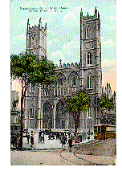

|
À quoi ressemblait l'île de Montréal à l'époque de Jacques? Après la Grande Paix de 1701, on peut s'intéresser au développement de Montréal. Jusqu'alors ce développement s'était limité à Lachine en 1669, Pointe-aux-Trembles en 1678 et Sainte-Anne-de-Bellevue en 1685, soit des avant-postes de défense, des établissements riverains et des postes de traite.
Les années suivantes des colons défrichent et s'établissent à la côte Notre-Dame-de-la-Vertu. On a également ouvert la côte Notre-Dame-de-Liesse, au débouché de Lachine, et ça se peuple lentement entre la côte des Neiges et la rivière des Prairies. Donc, lors de la naissance de Jacques Charette en 1777, l'île de Montréal est en voie d'être défrichée en bonne partie. Depuis la Conquête de 1760, les marchands britanniques dominent et contrôlent la quasi-totalité de l'économie montréalaise. Il existe toutefois des associations commerciales entre Anglais et Français, notamment pour la traite des fourrures. Les Français connaissent bien le territoire et entretiennent de très bons rapports avec ceux qu'on appelle les "sauvages". En échange, ils peuvent avoir accès aux crédits offerts par les banques britanniques qui ne font guère confiance aux Canadiens français. En 1770 James McGill, arrivé depuis trois ans au pays, se lance lui-même dans le commerce des fourrures avec des Français. Il épouse une Française, Charlotte Des Rivières. Les mariages mixtes sont nombreux, ce qui donne du fil à retordre aux autorités politiques et religieuses. Plusieurs couples mixtes souffrent de discrimination. À l'époque, les Français peuvent toutefois continuer à parler leur langue et à pratiquer leur religion. Regroupant Français, Anglais, Écossais, Irlandais, Juifs, la ville est déjà cosmopolite, mais aussi très inégalitaire. Les fonctionnaires et marchands britanniques, qui représentent 10% de la population, possèdent 50% des terrains privés. En 1786, le riche John Molson ouvre sa brasserie. Les classes aisées se font construire des maisons sur les flancs du Mont-Royal. McGill possède d'ailleurs une résidence au pied de la montagne, à l'endroit même où s'élève aujourd'hui l'université qui porte son nom. L'hygiène laisse beaucoup à désirer à Montréal. À l'époque on pense que l'eau n'est pas très bonne pour la peau. Les gens prennent un bain par semaine en été et toutes les deux semaines en hiver.  On trouve, en plein cœur de la ville, des potagers, des jardins et des champs en culture. À la place de l'actuelle autoroute Bonaventure s'élèvent des moulins à vent.
|

 Trois
frères Décary, Paul, Michel et Louis, commencent en 1702 le
défrichement de la côte Saint-Laurent. Les Sulpiciens,
seigneurs de Montréal, ont accordé dix-neuf concessions à la
côte Saint-Laurent, formant le noyau du futur village.
Trois
frères Décary, Paul, Michel et Louis, commencent en 1702 le
défrichement de la côte Saint-Laurent. Les Sulpiciens,
seigneurs de Montréal, ont accordé dix-neuf concessions à la
côte Saint-Laurent, formant le noyau du futur village.